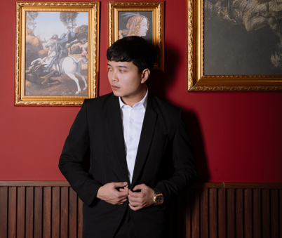

BioAge
LiveAI biological-age scanner (web + mobile). Estimates biological age from a face & body scan using an AI vision model, with a credit-based premium tier and multi-language support.
Visit productI design, build, and ship end-to-end web & mobile products — from backend APIs and databases to polished front-ends and live deployment. Based in East Jakarta, Indonesia, with 6+ years across IT support, development, and teaching.

I'm passionate about technology and education, and I genuinely enjoy learning new things — especially in the IT field. Over the years I've grown from IT support and teaching into hands-on full-stack development, building and launching real products that people use.
My experience spans IT support and web-development instruction in Indonesia, application support at Bisnis Integrasi Global, and web development & database administration at Infinix Philippines in Makati. Today, as a Senior Web Developer at Octo Global, I focus on shipping web and mobile products end-to-end — from API and database design to front-end and production deployment.
The languages, tools and platforms I reach for most often.
Lead web development end-to-end — architecting, building and maintaining production web applications, from back-end APIs and databases to responsive, high-performance front-ends.
Built and maintained company websites and internal web tools — developing new features, optimizing performance, and ensuring reliable production deployments.
Administered and maintained company databases — ensuring data integrity, running backups, optimizing queries, and supporting application teams with reliable data access.
Taught programming fundamentals to students, designing lessons and hands-on exercises that made technical concepts approachable and practical.
Delivered one-on-one programming tutoring, tailoring the curriculum to each learner's pace and goals across web and general programming topics.
Analyzed application documentation and source code, then modified and added features to existing applications according to client requirements.
Trained trainees in web development from fundamentals to advanced topics, and fostered an active, conducive classroom learning environment.
Implemented network installations and troubleshot networks and software across all divisions of the Djakarta Passenger Transportation Corporation.
AI biological-age scanner (web + mobile). Estimates biological age from a face & body scan using an AI vision model, with a credit-based premium tier and multi-language support.
Visit productAI personal-finance guardian. Real-time expense tracking with instant at-capture alerts and AI-powered transaction parsing, delivered as web + a mobile app.
Visit productAnti-scam protection suite. Verifies suspicious links, phone numbers, bank accounts, online shops and loan apps, plus AI screenshot analysis (OCR + AI) to detect fraud.
Anti-fraud mobile suiteOnline file-conversion platform for PDF and office documents, with user accounts, auth, and a fast SPA front-end backed by a Node API and containerized database.
Visit productA university directory & login-launcher portal with a journals section — a Node/Express + SQLite back-end serving a fast vanilla-JS front-end, fronted by Cloudflare.
Visit productA legal movie-discovery app with gamification — quests, XP, streaks, badges and referrals — built on Flutter with a Node back-end aggregating open content sources.
Cross-platform mobile appA programmatic-SEO login directory covering banking & service portals across Pakistan, built as a statically-exported Next.js site fronted by Cloudflare for speed and scale.
Visit productA viral face-scan personality app for Android & iOS — analyzes a selfie to generate a fun personality profile, built end-to-end in Flutter and targeting both app stores.
Cross-platform mobile appWeb app for reading the Holy Quran — Arabic text with translations, tafsir, audio recitations and search.
View repositoryA web-based point-of-sale (cashier) application for recording sales and managing transactions.
View repositoryAn incoming/outgoing letter archiving & correspondence-management system built with PHP & MySQL.
View repositoryA curated set of advanced Cloudflare WAF rules to defend websites against DDoS and malicious traffic.
View repositoryAn Android WebView wrapper that turns any website into a native app quickly and conveniently.
View repositoryA utility to resolve legacy mysql_* compatibility problems for projects on PHP < 7.
A movie data API project — the backend foundation feeding the Movieca movie-discovery experience.
View repositoryAn information system for new-student admissions (PPDB) — registration, data and workflow management.
View repositoryA clean, responsive calculator web app demonstrating core DOM & JavaScript fundamentals.
View repositoryBeyond code, a few things that keep me curious and moving.